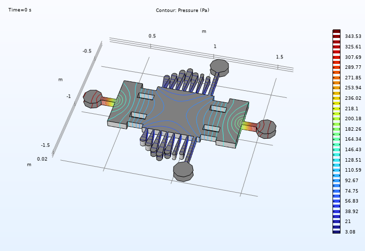

Microfluidic Devices to Study Neuronal Axon Networks in a Biomimetic Alzheimer Milieu
BME 550 Final Project Report, December 18th, 2022
Abstract
Alzheimer's disease, resulting from abnormal protein build-up in the brain, is detrimental to a patient's neuronal network and impacts millions of individuals within the United States. The research purpose of studying Alzheimer's disease is relevant because studying the Alzheimer's milieu will better inform future studies performed by researchers and increase therapeutic interventions within the healthcare industry. Moreover, creating a device that simulates the Alzheimer's microenvironment would allow for testing and manipulation of cholinergic neurons to generate conversance about how healthy neurons are affected by this disease. The final device consists of circular ports to house neuron somas, long thinning channels for unidirectional neuron axon growth, thin diffusion lumens for media/nutrient delivery, a main rectangular channel to mimic the Alzheimer's milieu, and inlets and outlets to promote flow throughout the device. Due to fabrication difficulties, the benchtop results from testing this device were limited, but COMSOL simulations validated the expected results. In the future, more extensive testing should be conducted, including neuron testing with the use of functional recording methods, such as microelectrode arrays and external electrodes. This will properly determine if the microfluidics device recapitulates the 3D structure of the physiological environment present within Alzheimer's disease and thus if it will enable high efficacy investigations of the Alzheimer's milieu.
Introduction
Over six million Americans have Alzheimer's disease, and the percentage of those with Alzheimer's increases with age. It is currently estimated that 500,000 new cases of Alzheimer's disease will be diagnosed this year. The cases for Alzheimer's are continuing to rise, there is no cure, and therapeutic intervention efficacy is low, demonstrating the need to properly understand and treat the pathology. Alzheimer's is thought to be a result of an abnormal, toxic protein build-up in and around brain cells. Therefore, as the disease progresses, cholinergic neurons become increasingly damaged and aberrant, eventually inducing their death. This will in turn cause brain regions to shrink, generating a significant loss in brain volume. In addition to Alzheimer's large effect on memory, it impacts sight and language. Alzheimer's is thus a dire pathology that reduces the quality of life of a significant amount of individuals.
Despite the impact Alzheimer's has, currently, there is a knowledge gap associated with the mechanisms Alzheimer's uses to create aberrant neuronal behavior and ultimately destroy axonal networks as well as key pathological features and signaling molecules. More models that provide highly mimetic simulations of the in vivo Alzheimer milieu are thus needed in order to generate conversance about Alzheimer's and how to effectively treat it. As a result of this, the goal was to create a microfluidic device that promotes neuron growth and mimics the Alzheimer's microenvironment with a high degree of accuracy. This model will allow researchers to determine how healthy neurons are thus affected by the synthetically created environment, as well as several other factors if warranted. The objective is to create a device that can hold and unidirectionally grow neurons, so the size of the device must ergonomically match this by securing the neuron somas in place and encouraging elongation of the neuron axons and dendrites. It must also be capable of acclimating to changes in the neurons. A microdevice is useful to study an Alzheimer-like milieu as the microscale enables a high degree of mimicry of the in vivo environment due to the dimension match. The pathology also impacts neurons and a microdevice is the proper size to interface with, house, and guide cell growth of neurons. This will allow individual studying and manipulation of neurons within an Alzheimer milieu, promoting proper investigation of the in vivo Alzheimer environment and thus generating pathologic conversance.
Methods
Fabrication Methods
An incremental design development and fabrication process was performed in order to establish a microfluidics device capable of properly mimicking the in vivo Alzheimer's disease milieu. Following the seeding of cholinergic neurons into the device, conversance will be generated about how Alzheimer's disease influences neurons, the aberrant neuronal behavior that is induced, pathological progression, and potential treatment mechanisms. To begin fabrication, a microfluidics device was developed within Adobe Illustrator and consisted of three main functional groups: 14 circular ports connected to long thin channels, 16 thin lumens, and a larger, rectangular main channel.
Each functional group was designed for a specified purpose in order to enhance the Alzheimer environment mimicry. The circular ports act as reservoirs for cholinergic neurons to be deposited into. The environmental conditions (chemical and mechanical properties) of these ports will promote the viability and growth of the cholinergic neurons, enabling Alzheimer's influence on neurons to be properly studied. The milieu will specifically consist of a 1 - 4 kPa surface stiffness and Advanced Dulbecco's Medium Modified Eagle Medium, 1 mM of beta-mercaptoethanol, and 100 ng/ml nerve growth factor (NGF). The 100 um diameter size of each port will be large enough to house the neuron cell bodies as well as tight enough to secure each neuron in place within their respective reservoir, preventing soma transport down the channels, due to their 40 um diameter.
The long channels that extend within these ports will taper from 100 um at the proximal end (closest to reservoir) to 20 um, developing a pressure gradient. With the assistance of passive pumping, this will induce the flow of neuron growth, specifically in terms of their dendrite and axon extension, along the channels. As the channels connect to the main rectangular 1.50 mm x 1.50 mm channel, the axons will be able to disperse throughout the main compartment, interacting with other neurons, simulating the neuronal network found in the forebrain. This interaction in the main channel is critical to the study of Alzheimer's, as the pathology damages cholinergic neurons, disrupting and altering their electrical interactions, resulting in memory loss.
The central location (1.50 mm x 1.50 mm chamber) will mimic the in vivo milieu that corresponds to Alzheimer's, containing a high concentration of beta-amyloid peptides and highly phosphorylated tau proteins, enabling an analysis to be performed on the interactions between neurons. The 16 thin lumen channels will be used to introduce media, nutrients, and factors into the system. They connect directly to the large main channel. The channels use passive pumping to diffuse all the required solutions and materials (neuronal growth stimulating media, beta-amyloid peptides, and highly phosphorylated tau proteins) into the device, flowing into the main channel as well as through the axon channels and into the neuron ports.
Photolithography Process
A mask containing the seven Adobe Illustrator microfluidics device designs was ordered and SU-8 photoresist photolithography was subsequently utilized to develop the patterns on a silicon wafer. To prepare the silicon wafer for pattern coating, it was exposed to air in order to clean its surface and remove any residual dust and particles. Following the cleaning of the silicon wafer, it was pre-baked for ten minutes (65C) followed by a two minute cool-down in preparation for SU-8 photoresist coating.
To ensure UV light exposure can generate the desired pattern on the wafer with deep enough channels to enable proper diffusion and flow dynamics, the SU-8 photoresist must be homogeneously distributed across the wafer with a thickness of ~120 um. The SU-8 is carefully poured onto the middle of the spinning wafer and spun at a 1000 rpm rate for 40 seconds. To properly develop and solidify this coat, the wafer-SU-8 photoresist complex underwent a 30 minute, 95C softbake, followed by a two minute cool-down.
With the wafer coated in the SU-8 photoresist, the next step was to expose the silicon to 365 nm UV light through the patterned photomask in order to generate the appropriate topology on the photoresist. As SU-8 is a negative photoresist, all material illuminated by the UV light will solidify and remain following development, while the unexposed regions will dissolve. Initially, with a power of 14180 W, the wafer was exposed to 365 nm UV light for 27 seconds. Unfortunately, after a post-exposure bake and development, this duration overexposed the wafer, resulting in microfluidics devices that contained blurry edges and features that were merged together. To solve this issue, a new SU-8 coated wafer was developed and was then exposed to UV light through the pattern photomask for only 25 seconds.
PDMS Mold Fabrication
Although the microfluidic device patterns have been generated on the wafer, it can not be utilized as an individual device as the pattern is only present on the wafer. As a result, PDMS molds replicating each microfluidic device were fabricated in order to obtain a device that can be tested and implemented for research. To fabricate the PDMS, a 10:1 ratio of Sylgard 184 silicone elastomer base and elastomer curing agent were mixed together in a petri dish and then placed in a vacuum for an hour to degas the solution and remove bubbles.
Following proper bubble removal from the silicon wafer, the wafer was taken out of the vacuum and coated with the PDMS mixture. The PDMS solution was carefully poured over the wafer, ensuring a homogenous distribution of the mixture was obtained along each microfluidics device pattern on the silicon. With the completion of PDMS deposition, the wafer was cured for 2.5 hours at 80C and then underwent a ten minute cool-down. The curing and cool-down process produced a high resolution, solidified, and mimetic PDMS microfluidics device mold that enables proper in vitro analysis of Alzheimer's.
As there were seven different PDMS molds fabricated, one for each microfluidic device pattern, the molds were placed onto a glass plate and exposed to oxygen plasma for three minutes. This resulted in attaching the PDMS molds to the glass, creating a substrate for all of the molds to adhere to in order to increase the strength, durability, cyclic fatigue resistance, and portability of the devices as well as promote testing feasibility. To finalize the microfluidic devices, the inlet and outlet 2 mm diameter ports were punched to allow delivery and removal of the necessary solution, media, nutrients, and factors.
Validation Testing Methods
To validate the microfluidic device, an in silico COMSOL and a practical benchtop simulation tested the efficacy of the microfluidics device. The physical, practical testing established the functionality of the microdevice device using colored dye and a needle/syringe system. Both testing systems were utilized in order to determine the environment and flow patterns that would be created with the device. Primarily, these tests were used to confirm that the diffusion ports operated correctly and created a diffusion gradient, delivering the required media, nutrients, and factors to the main channel of the device where the neuronal axon network would be located.
The in silico testing was performed using a COMSOL simulation. The Adobe Illustrator design was used as a reference to create a SolidWorks 3D model of the device which was then imported into COMSOL for in silico testing. The parameters used include laminar flow, diluted species transport, and inlet and outlet assignment. This testing was performed to validate the flow that would occur through the device to ensure the media, the nutrients, and the factors were properly delivered to the main channel and somal chambers.
Next, the practical, benchtop tests were performed to confirm the flow throughout the device. Diluted, colored food dye was injected via a syringe, tubing, and needle system into the inlets. The fluid was delivered via a hole in the inlet at an injection rate of ~0.025 mL/second. The injection and overall flow of the fluid was recorded and inspected using a Leica MZ95 Stereomicroscope at a 0.6x magnification in order to see the entirety of the device.
Results
Proof-of-concept Measurements: In Silico
To establish the efficacy of the microfluidics design, in silico testing was performed. The results displayed that injecting fluid at different flow rates (ranging from 0.0025 m/s to 0.025 m/s) from the outside walls of the inlets generated a uniform flow that covered the entirety of the device. This is crucial as this aims to serve as the input for media, factors, and future treatment agents. The ability for the entire device, including the neuron reservoir circular ports, to receive the solution via injections at the inlets, confirms the success of the system.
Pressure differences at the time of the injections were also investigated. The highest pressure occurs next to the injection sites (inlet ports) and drops to its minimal value at the end of the defined outlets (outlet and neuronal reservoir ports). This is important to consider as this will impact the concentration of the injected agents, developing a concentration gradient leading into the somal and axonal locations. This variance can be utilized to tailor concentrations of specific materials, such as NGF, in order to promote axonal growth and neuron health will enable the device to provide proper in vitro investigations of the Azheimer milieu.
Proof-of-concept Measurements: Benchtop
As a majority of the microdevice's channels were fused together, finding an efficient and effective way to show the full functionality of the device was a challenge. Problematic PDMS-glass plate attachment, low resolution patterns, and PDMS rupture during the fabrication process also limited the benchtop results. It is still important, however, to acknowledge the effort put into testing the functionality of the device.
To show the functionality of fluid flow, yellow dye was injected into a single inlet for one of the microfluidic devices. Unfortunately, the PDMS did not adhere to the glass slide properly. Thus, in the first round of testing, there were not any conclusive results as the dye would consistently leak underneath. Therefore, the PDMS was adhered to the glass slide a second time, ensuring that it was secured properly. A second round of testing was then performed. The testing yielded much better results this time, although it could not be effectively quantified. They did show proof-of-concept in that it created a linear flow from injection site to the opposing injection and outlet ports with slight diffusion into the fused neuronal channels.
Supporting Media


Discussion
Alzheimer's disease is thought to be caused by the abnormal buildup of proteins in and around brain cells. Two such proteins include amyloid and tau. Amyloid is thought to clump together into plaques in between the neurons and block the information flow. In a brain with Alzheimer's, chemical changes within the brain will cause the tau proteins on microtubules to dissociate then reassociate to other tau proteins. These chains of tau proteins continue to accumulate within neurons and block the neuron's transport system, ultimately affecting synaptic transmission. Unfortunately, there is minimal conversance about the mechanisms controlling these steps as well as the process that follows as part of Alzheimer's disease.
The device described above will allow delicate manipulation of the system's environment in a controlled, experimental fashion in order to induce appropriate Alzheimer's mimicking phenotypes in the cholinergic neurons. Recent studies have grown organoids to express Alzheimer's-like pathology by exposing them to healthy blood serum. Researchers have confirmed the protein called phosphatase 1 (PP1) acts as a molecular link between the genetic risk factors of late-onset Alzheimer's disease and the amyloid plaques and tau tangles. With this in mind, experiments could be performed where different solutions are inserted into the device followed by the measurement of the amount of PP1 from the outlets at various time points after treatment. Standard growth media and blood serum could also be used as controls for new altered solutions that screen for factors suspected of contributing to Alzheimer's disease.
Based on the testing and results, the device should still function as intended. However, slight modifications in the fabrication process should be considered to bring the idea to fruition. The computer simulated flow data suggests the media and other reagents would properly reach the neurons as initially intended. So, it will be vital to ensure measures are taken to avoid further unnecessary problems of the microfluidic device. First thing to consider would be to spray the glass plate with ethanol to sterilize and completely dry the surface to increase the chance of proper attachment of the PDMS mold. Second, the amount of time spent exposing the photoresist as well as the amount of time the wafer and photoresist are in the developer need to be optimized.
Assuming the PDMS is sealed properly and quantitative fluid flow and media concentration tests are run successfully, it would be interesting to look further into performing functional recording on the cells of interest. One way this can be completed is through the use of micro-electrode arrays and external electrodes in order to study a closer representation of the true physiological 3D structure. With the current device, the system is studied in 2D. This limitation can result in losing valuable information such as how blood flow contributes to the spread and build-up of amyloid and tau proteins. Lastly, assuming the device is successful in mimicking an Alzheimer's milieu, this device should be able to be used in the research of Alzheimer's disease in order to generate understanding of the underlying mechanisms eliciting and progressing the disease as well as promote the development of novel treatments.
References
- B. D. James, et al., "Contribution of Alzheimer disease to mortality in the United States," Neurology, vol. 82, no. 12, pp. 1045-1050, Mar. 2014.
- "Alzheimer's disease - Causes," nhs.uk, May 10, 2018.
- "What Happens to the Brain in Alzheimer's Disease?," National Institute on Aging.
- Y.-H. Kang et al., "Comparative Analysis of Three Different Protocols for Cholinergic Neuron Differentiation in Vitro Using Mesenchymal Stem Cells from Human Dental Pulp," Animal Cells and Systems, vol. 23, no. 4, pp. 275-287, Jun. 2019.
- T. Niikura, H. Tajima, and Y. Kita, "Neuronal Cell Death in Alzheimers Disease and a Neuroprotective Factor, Humanin," CN, vol. 4, no. 2, pp. 139-147, Apr. 2006.
- J.-P. Frimat, B. Schurink, and R. Luttge, "Passive pumping for the parallel trapping of single neurons onto a microsieve electrode array," Journal of Vacuum Science & Technology B, vol. 35, no. 6, Nov. 2017.
- D. N. Urrutia, et al., "Comparative study of the neural differentiation capacity of mesenchymal stromal cells from different tissue sources," PLoS ONE, vol. 14, no. 3, Mar. 2019.
- V. Tiwari, V. Solanki, and M. Tiwari, "In-vivo and in-vitro Techniques Used to Investigate Alzheimer's Disease," Frontiers in Life Science, vol. 8, no. 4, pp. 332-347, Jun. 2015.
- H. Wu, J. Williams, and J. Nathans, "Complete morphologies of basal forebrain cholinergic neurons in the mouse," eLife, vol. 3, May 2014.
- L. Bartee, W. Shriner, and C. Creech, "Passive Transport: Diffusion," 2017.
- P. P. Urone and R. Hinrichs, "Cohesion and Adhesion in Liquids: Surface Tension and Capillary Action," College Physics 2e | OpenStax, Jul. 2022.
- "SU-8 50-100 Data Sheet - MicroChem," yumpu.com, 2022.
- F. Burgoyne, "Rapid Curing of PDMS for Microfluidic Applications," Royal Society of Chemistry, Oct. 2006.
- Scott, S A, and K A Crutcher. "Nerve growth factor and Alzheimer's disease." Reviews in the neurosciences vol. 5,3 (1994): 179-211.
- C. Baltes, et al., "Detecting amyloid-beta plaques in alzheimer's disease," Methods in Molecular Biology, pp. 511-533, 2010.
- "Scientists use human-derived brain cells to develop more realistic 'disease-in-a-dish' models of Alzheimer's," National Institute on Aging.